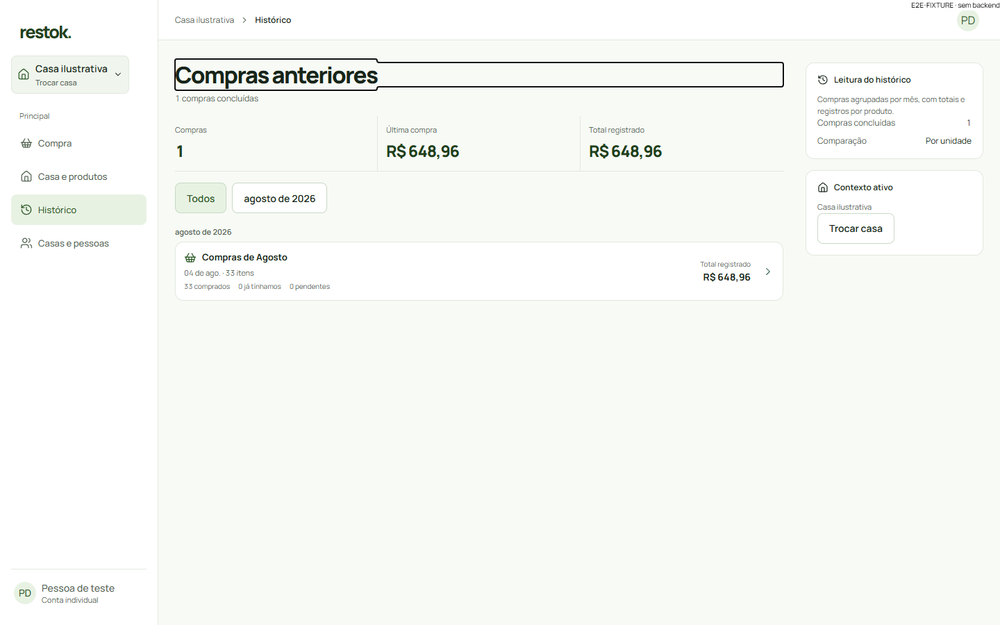
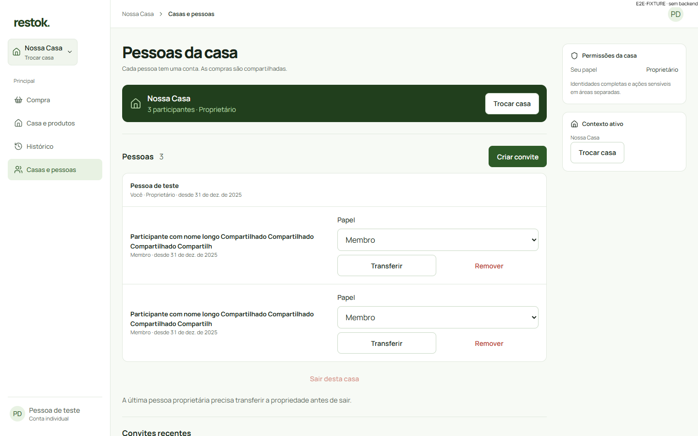
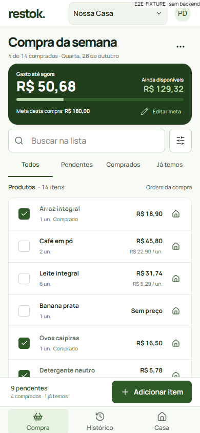
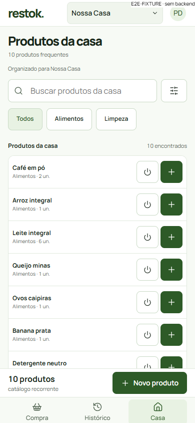
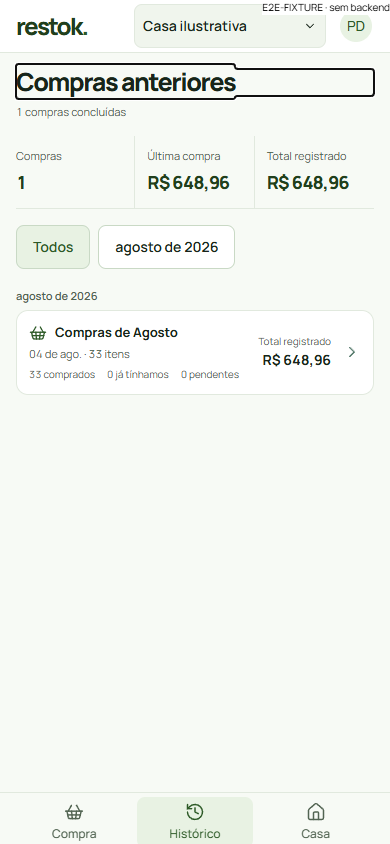
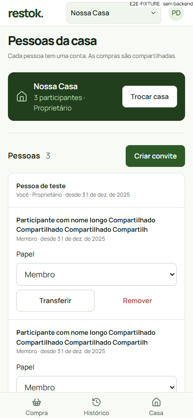
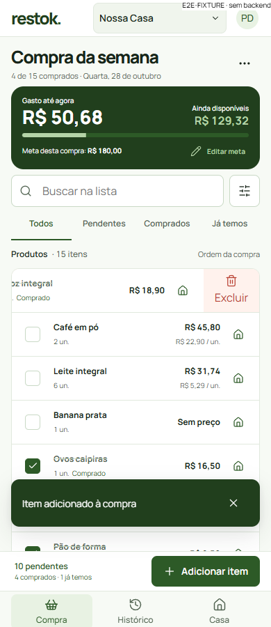
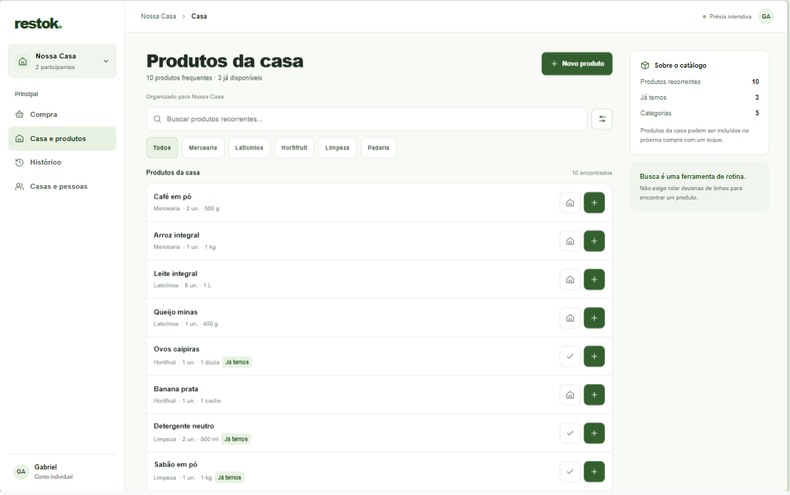
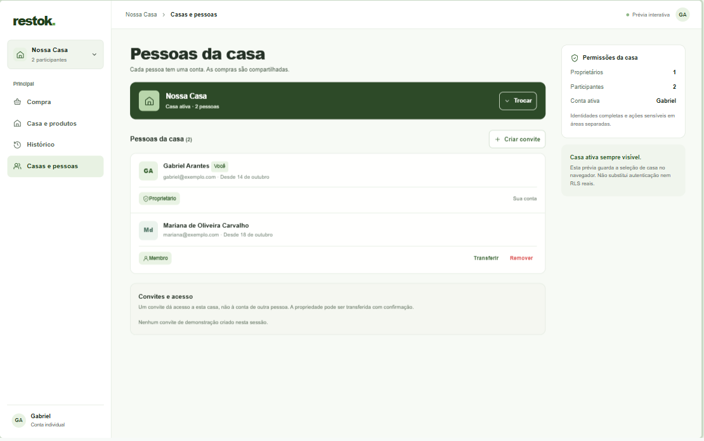

Restok — telas restantes
Componentes reais com adaptador de QA isolado, sem backend. Relatório de conformidade e limitações.
Desktop 1440px
Histórico
Pessoas
Mobile 390px
Compra
Casa
Histórico
Pessoas
Exclusão por gesto

Demonstração publicada consultada
Casa — referência v6
Pessoas — referência v6